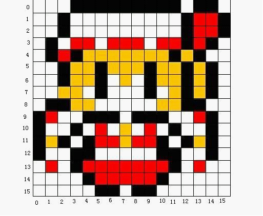
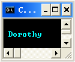
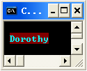

Extra
关于CHAR_INFO结构体
这个是控制台方法直接操作控制台屏幕缓冲用的结构体，一个这样的结构代表控制台屏幕上的一个点，在Dorothy中只要知道它包含[字符]和[显示信息]两个部分，然后大概是这样用
CHAR_INFO kCharInfo;
kCharInfo.Char.AsciiChar = 'a';//设置字符
kCharInfo.Attributes = BACKGROUND_RED;//设置背景色，这里用的是控制台自己的宏但颜色种类少，也可以用Dorothy的宏
控制台格子的概念
这个很明显了，控制台屏幕是被分为一个一个的格子，一个格子可以放一个字符。所以所有和控制台相关的坐标全都是基于这些格子的坐标，就连获取到鼠标在屏幕上的坐标也是按格子算的。控制台格子的像素宽高可以用oConsole::SetFont()来改，所以你可以通过改格子的宽高稍稍改善Dorothy“分辨率低”的问题。

ViewWorld GameWorld
在Dorothy中屏幕显示的区域和游戏世界的范围是分开的，就是说你可以做个无限大的游戏世界然后通过使用oScreen::SetView()改变屏幕显示区域的位置来看到各个部分。
前景色和后景色
在设置oImage图片上颜色的时候可能会遇到两种类型的颜色FORECOLOR和BACKCOLOR，FORECOLOR是每个格子上字符的颜色，BACKCOLOR是字符背后矩形区域的颜色。

//设置了FORECOLOR_CYAN | FORE_INTENSITY

//设置了FORECOLOR_CYAN | FORE_INTENSITY | BACKCOLOR_RED(设置了INTENSITY的颜色会比较明亮)